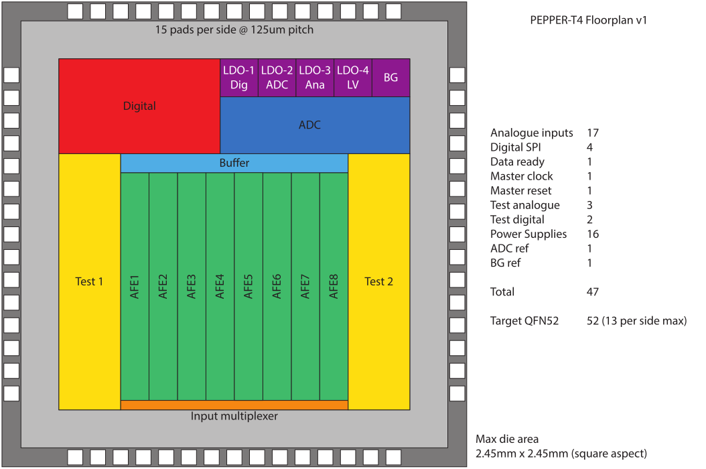

Skip to main content
Back to top
Ctrl
+
K
Pepper T4
Developer Guide
Sense Chip
Changelog
TODO List
Pepper T4
Developer Guide
Sense Chip
Changelog
TODO List
Section Navigation
System Pre-Study report
Pepper T4 ADC
System Modelling
Python Source Code
Python Digital Modelling
Python Analog Modelling
Circuit Modules
Analog Circuit Modules
CDAC Circuit Modules
Digital Circuit Modules
Application Notes
Simulation Results
Verification Summary: LIB_PEPPER_NSADC tb_capacitor_mc
Verification Summary: LIB_PEPPER_NSADC tb_loopfilter_analogue
Verification Summary: LIB_PEPPER_NSADC tb_mes_dac_v2
Verification Summary: LIB_PEPPER_NSADC tb_comparator_digital
Verification Summary: LIB_PEPPER_NSADC tb_loopfilter_v3
Verification Summary: LIB_PEPPER_NSADC tb_nssar_decimator_18b
Verification Summary: LIB_PEPPER_NSADC tb_sar_controller
Verification Summary: LIB_PEPPER_NSADC tb_sar_controller_top
Pepper ADC Changelog
Pepper T4
Sense Chip
Sense Chip
#
Outline
#
Floor Plan
#

On this page
Outline
Floor Plan